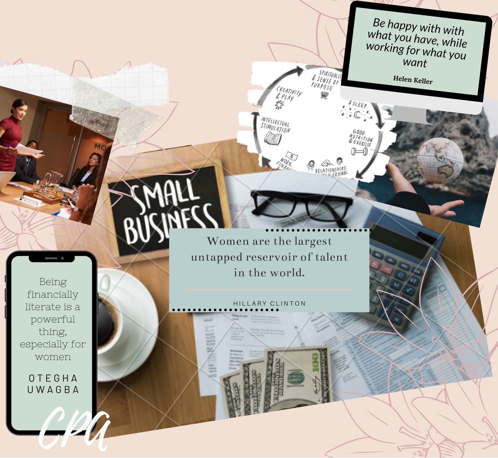

I'm a 4th year BBA student at Wilfrid Laurier University.
Manifesting.Goals.Dreams.
Future Aspirations
Oprah Winfrey and Steve Harvey over the years have talked about vision boards. Other's on social media call it the impossible list or bucketlist. Take a look at my working future goals. I still have a long ways to go, but so far some highlights for me have definitely been meeting Marc Kielburger, listening to Barack Obama present and parasailing in Cozumel. There are still some major goals I am working towards like helping small business with content and social media strategy but I am excited to see where the future takes me!
